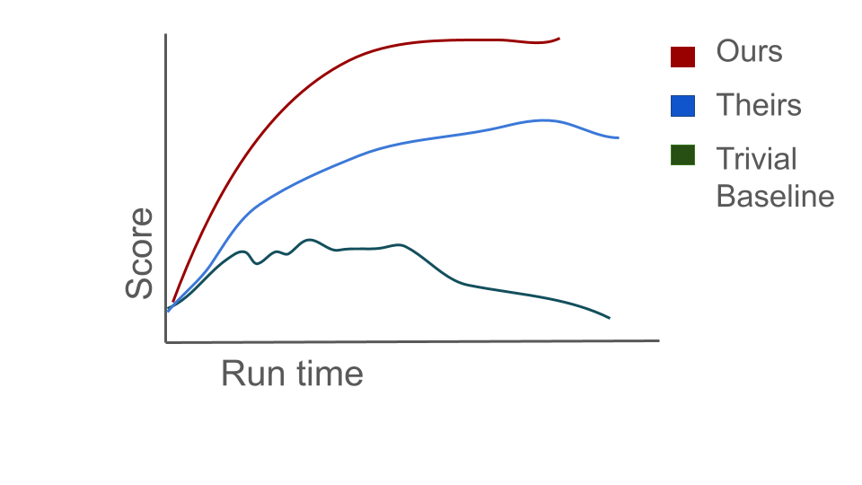

AI epistemics mega-series, part 3
To get a paper into a major conference, it helps to have at least one of two things: a proof (discussed in the previous post), or a plot where the line corresponding to your method is higher than the lines for other methods. Occasionally, the reviewing cycle accepts a paper which makes an observation about an intriguing property of neural networks, or which proposes a useful tool for e.g. computing Hessians which doesn’t directly improve performance on a benchmark, or which proposes a new dataset for people to evaluate their methods on. Although it’s possible to get these types of papers into conferences, it is much easier to get good reviews if you add a plot that looks like the one below.

Figure 1: The thing we all want in our papers but that turns out to be very hard to obtain without hyPer-hacking.If you’re at all familiar with my work, you’re aware that I love writing experimental papers. I love the process of noticing some weird quirk in a training run, then digging into it and figuring out what is happening to cause it and why. The price of doing this kind of research is that reviewers find it at best strange, and at worst confusing and useless, and rebuttal periods often involve a lot of argumentation over whether it’s important to understand why something doesn’t work when you could have spent that time just making it work.
Which is why I feel justified in presenting the following (only slightly incendiary) claim: if you can’t use the findings from your paper to beat SotA, it might not be as insightful as you think it is.
In most natural sciences, if you have to justify the existence of your research agenda you can point to some evidence that the thing you’re studying exists in the real world and say “see that thing? I’m going to figure out what it’s doing.” The set of things that exist in the real world is heavily constrained. In biology, the set of phenomena you can study is limited by the finite number of life forms on the planet; in chemistry, by the limited set of possible combinations of elements. Even though subjecting rodents to various extreme diets probably won’t materially improve humanity’s well-being, it slightly reduces our uncertainty about how the world works – and every once in a while it turns out that you discover the cure for scurvy, which justifies the thousand other studies that just left a trail of bad-tempered, malnourished rats. I’m often jealous of natural scientists for their freedom from justifying their search for knowledge in terms of its practical applications.
By contrast, resnets and transformers don’t “exist” in the same way that brains, chemicals, and fluid dynamics do. People made them up. And devoting billions of dollars of research into something that someone made up requires evidence that the made-up object is useful towards some real end, otherwise you end up writing papers on things called “lightface pointclasses”. In practice, the primary grounding machine learning has with the real world is when we apply our learning algorithms to real data. Performance on benchmark datasets is one of the few heuristics we have to determine whether a learning algorithm is worth studying. A rigorous empirical investigation into a learning algorithm that can’t even solve MNIST, no matter how well-designed the study and how carefully-controlled the experiments, is not going to produce useful knowledge unless it can be shown that the results of the study also hold in learning algorithms which can be shown to be good at predicting “real” phenomena.
One major driver of this distinction is that the end goal of AI as a field is generally agreed to involve producing a system which is capable of solving arbitrary cognitive tasks. Understanding this system would be nice, but isn’t universally considered mandatory. Once we have a generally intelligent system, we can start poking at it. Before then, one might argue, understanding the behaviour of an image classifier that can’t distinguish a gibbon from a slightly pixelated panda is as useful as understanding the physics of a child’s sand castle.
At the same time, engineers frequently study sub-optimal systems in order to avoid repeating past mistakes – many a thesis has been devoted to bridges that have fallen down. However, there is relatively little consensus in AI about which transitional systems are worthy of study. For example, is the ResNet-18 is an interesting endpoint whose phenomenology is worth study, or merely a disposable stepping stone on the way to true intelligence? When a better model comes along, should we abandon ResNets and only conduct experiments on the Next Big Thing? Without a decisive answer, there is consequently little consensus on whether experiments investigating properties of the ResNet-18 have merit. It’s not enough to be inter-subjectively testable, as Popper would say delineates science from other disciplines: in an engineering-flavoured field, the inter-subjectively testable finding must facilitate improved capabilities.
Machine learning can be distinguished not just from mathematics, but also the natural sciences, by its focus on producing artifacts. This grounding in reality distinguishes AI from other constructive disciplines like pure mathematics. Please correct me if you’re a mathematician who disagrees, but from what I understand in pure math you mostly decide what to work on based on mathematical aesthetics of the problem, perceived tractability, and whether other mathematicians agree that the question is important. This approach can produce some very elegant mathematics, but requires heavy regularization to avoid divergence into niches\(^1\). Machine learning theory can become quite removed from reality, but it maintains the goal of trying to describe learning systems which can be applied to real data, and if the assumptions required to prove a theoretical result diverge too gratuitously from practical systems, reviewers will often pick up on it and reject the paper. Thus an ML theory paper has to contend with two orthogonal questions: first, is the result true, and second, does this result tell me anything about interesting learning problems?
Empirical ML papers raise analogous questions: first, does this property generalize to different network architectures and optimizers? Second, does this property affect the ability of the algorithm to learn? A sufficiently general property of a network which correlates with learning ability is a good candidate for “useful knowledge”. But proving these two facts is difficult. We don’t have standardized methods for establishing generality, which means an indecisive reviewer can always ask for additional evaluation settings, and proving causality is a notoriously difficult problem.
Fortunately, there is a simple solution to this challenge: find a handful of tasks that the community considers important (benchmarks), and then find a means of intervening on the property you are studying and see if that has the expected effect on performance (by improving, i.e. beating baselines).
Sound familiar?
Beating baselines on standard benchmarks is one way to show that your knowledge is useful, but it’s not the only way, nor is it always applicable. The original adversarial examples paper did not find a way to improve accuracy on vanilla image classification datasets, and somehow still managed to spawn a thriving subfield. Indeed, given the existence of adversarial example stickers, the purely synthetic phenomenon studied by Goodfellow et al. succeeded in bridging the gap into the real world. Other examples of papers that don’t follow the “get-a-better-number-on-a-baseline” rule exist, but tend to cluster in subfields which already have a more inclusive epistemic model, such as interpretability, or the more recent trend of cataloguing the response of LLMs to various prompt-tuning strategies (which I call LLM Psychology, but I expect will eventually get a catchier name).
From a philosophical perspective, this obsession with benchmarks based on real-world data makes sense. The objects produced by nature are “special”, in a way that objects produced by sleep-deprived graduate students cannot be. And having a means of distinguishing what information is worthwhile to find out is important for a field. If there is no consensus that a phenomenon is important, then decreasing uncertainty about that phenomenon will have dubious scientific value. This ambiguity is the price of attempting to do science on engineered objects. However, there are two particular means by which scientific investigation can provide utility even in the absence of consensus on which learning systems carry epistemic value: providing evidence of a universal (or at least general) phenomenon of learning systems, and providing rigorous principles on the underlying dynamics of current learning systems which can be leveraged to make engineering approaches more principled.
A nice example of the first case is this paper on the learned representations of ResNets vs Transformers, which aimed to identify whether certain trends about the types of features that are learned in shallow vs deeper layers generalize across architectures. A nice example of the second has been work studying initializations and learning dynamics of wide networks which, while still far from maturity, does provide guidance on how to initialize a network in order to obtain certain properties in its learning dynamics.
The interaction between AI and neuroscience is another direction where more scientific, as opposed to engineering, research can provide useful knowledge. A ResNet-18 might not be intrinsically interesting, but it could be a useful model for studying some aspect of the human visual system, which is. For example, successor representations have been analogized to grid cell representations found in the hippocampus, and in the reverse direction some recent work has tried to find symbolic representations of reinforcement learning behaviour in rodents via evolutionary search with LLMs. One particularly nice example I’ve encountered was the finding that dopaminergic neurons in the brain encode a distribution over predicted rewards in a way that was remarkably analogous to a class of reinforcement learning algorithms known as distributional RL.
It’s certainly possible to write a good “science of deep learning” paper, but it’s a lot harder to get right than you’d think. The fact that you need to add the prefix “science of” to the topic you’re studying should already be a big hint that you are trying to apply scientific tools outside of their natural wheelhouse. Most scientific fields presuppose that the thing they’re trying to understand is real and interesting, and these two properties are not always true of objects you could study in AI. Instead, the interestingness of a phenomenon in AI depends on whether improves (or has the potential to improve) capabilities on some grounded domain. MLPs became much less scientifically interesting once ResNets took off, the optimization dynamics of GANs stopped being interesting once diffusion models emerged. Because not all objects are interesting, and whether an object is interesting is largely a function of what it’s able to learn, getting SotA performance on benchmarks is a useful rule of thumb for figuring out whether it’s worth spending the time to read and understand a paper.
Of course, studying a system that’s at the frontier of capabilities isn’t sufficient to do interesting research.You also need all of the standard good scientific practices of constructing a well-formulated hypothesis and conducting replicable, rigorous, statistically significant experiments which might falsify your hypothesis. But unlike in the natural sciences, these practices aren’t sufficient to pass the epistemic bar applied to papers in an engineering-flavoured field like AI. The judgement of what objects are worth applying the scientific method to, and what hypotheses are worthy of investigation, is crucial to prevent the field from branching into self-perpetuating communities who study objects of no innate usefulness or interest. And so, much as I think it is over-indexed on in the review process, I have been forced over the years to come to the conclusion that asking a paper to apply its findings to a well-established benchmark isn’t quite the devil I’d previously thought it to be.
Footnotes